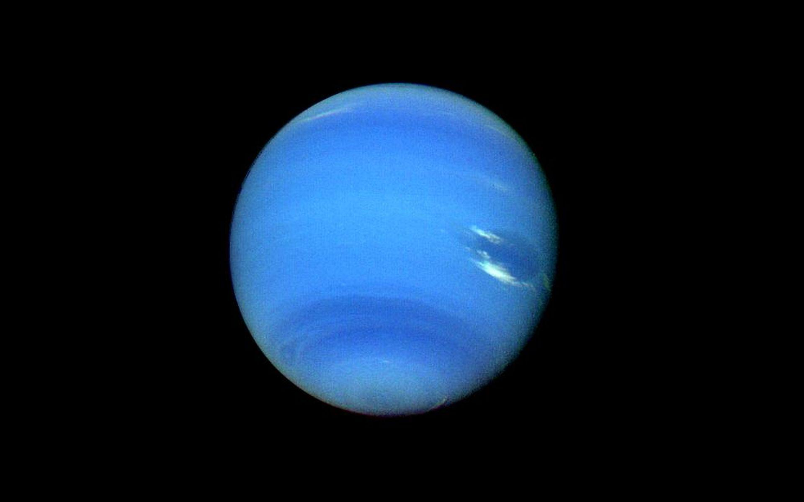

Neptun im Überblick
Neptun, benannt nach dem römischen Gott des Meeres, ist der achte und äußerste Planet unseres Sonnensystems. Mit seiner leuchtend blauen Farbe und seinem stürmischen Charakter ist Neptun ein faszinierender Himmelskörper. Hier erfahren Sie mehr über seine Entdeckung, seine einzigartige Atmosphäre und seine Rolle im äußeren Sonnensystem.
Missionen zum Neptun
Novus Space Exploration hat wegweisende Missionen entwickelt, um die Geheimnisse von Neptun zu erforschen. Von Raumsonden bis hin zu fortschrittlichen Teleskopen haben wir es uns zur Aufgabe gemacht, das Verständnis dieses abgelegenen Gasriesen zu vertiefen und neue Einblicke in die Dynamik unseres Sonnensystems zu gewinnen.
Die Atmosphäre von Neptun
Tauchen Sie ein in die eisige Atmosphäre Neptuns, die hauptsächlich aus Wasserstoff, Helium und Methan besteht. Erleben Sie mit uns die faszinierenden Stürme und Wetterphänomene, die diesen entfernten Gasriesen prägen, und entdecken Sie, wie sich seine Atmosphäre von anderen Planeten unterscheidet.
Ringsystem und Monde
Neptun verfügt über ein komplexes Ringsystem und eine Vielzahl von Monden. Erfahren Sie mehr über diese Begleiter und ihre Rolle bei der Erforschung von Neptun. Unsere Mission ist es, das Verständnis der Wechselwirkungen zwischen dem Planeten und seinen Monden zu vertiefen.
Zukunft der Erforschung von Neptun
Bleiben Sie auf dem Laufenden, um die neuesten Updates und Entdeckungen im Zusammenhang mit Neptun von Novus Space Exploration zu verfolgen. Vielen Dank für Ihr Interesse an unserer Mission, die Grenzen des Wissens zu erweitern und die Geheimnisse des Universums zu enthüllen.
© 2024
Novus Space Exploration AG, Inc. Alle Rechte vorbehalten